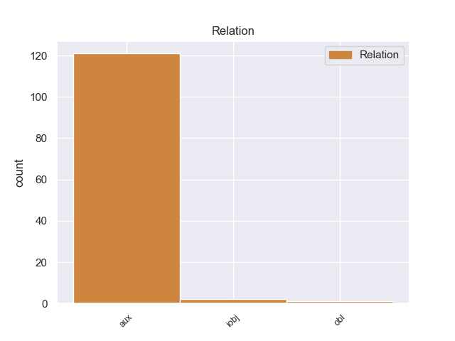
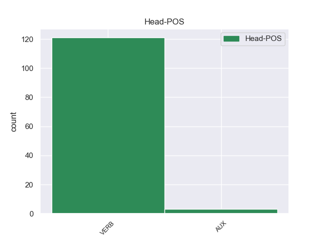
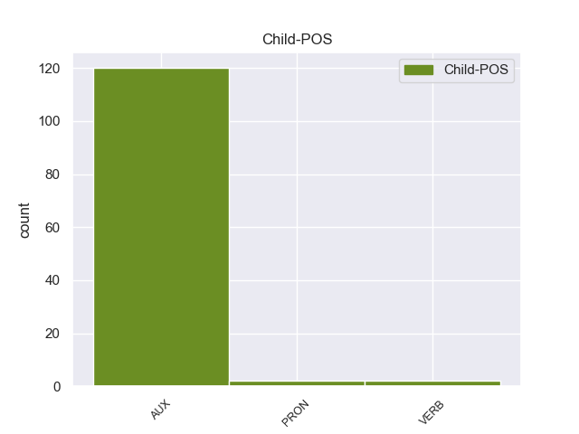

Distribution of features within this leaf



Agreement Rules sorted by frequency.
- When the dependent token is the auxiliary(aux) of the head token,
1 Ο _ _ _ _ 0 _ _ _
2 πρόεδρος _ _ _ _ 0 _ _ _
3 Ομπάμα _ _ _ _ 0 _ _ _
4 εξέφρασε _ _ _ _ 0 _ _ _
5 τα _ _ _ _ 0 _ _ _
6 συλλυπητήριά _ _ _ _ 0 _ _ _
7 του _ _ _ _ 0 _ _ _
8 προς _ _ _ _ 0 _ _ _
9 τα _ _ _ _ 0 _ _ _
10 θύματα _ _ _ _ 0 _ _ _
11 , _ _ _ _ 0 _ _ _
12 ενώ _ _ _ _ 0 _ _ _
13 δεσμεύτηκε _ _ _ _ 0 _ _ _
14 ότι _ _ _ _ 0 _ _ _
15 η _ _ _ _ 0 _ _ _
16 κυβέρνηση _ _ _ _ 0 _ _ _
17 θα er AUX _ Mood=Cnd|Number=Sing|Person=3|VerbForm=Fin 18 aux _ _
18 βοηθήσει βοηθήσr VERB _ Mood=Cnd|Number=Sing|Person=3|VerbForm=Fin 0 _ _ _
19 τους _ _ _ _ 0 _ _ _
20 πληγέντες _ _ _ _ 0 _ _ _
21 να _ _ _ _ 0 _ _ _
22 ανακτήσουν _ _ _ _ 0 _ _ _
23 τις _ _ _ _ 0 _ _ _
24 δυνάμεις _ _ _ _ 0 _ _ _
25 τους _ _ _ _ 0 _ _ _
26 και _ _ _ _ 0 _ _ _
27 να _ _ _ _ 0 _ _ _
28 αποκαταστήσουν _ _ _ _ 0 _ _ _
29 τις _ _ _ _ 0 _ _ _
30 ζημιές _ _ _ _ 0 _ _ _
31 . _ _ _ _ 0 _ _ _
Disagree Examples:
1 Οι _ _ _ _ 0 _ _ _
2 δύο _ _ _ _ 0 _ _ _
3 αντίπαλοι _ _ _ _ 0 _ _ _
4 θα er AUX _ Mood=Cnd|Number=Plur|Person=3|VerbForm=Fin 5 aux _ _
5 ξανασυναντηθούν ξανασυναντηθο VERB _ Mood=Ind|Number=Plur|Person=3|Tense=Past|VerbForm=Fin 0 _ _ _
6 σ _ _ _ _ 0 _ _ _
7 τις _ _ _ _ 0 _ _ _
8 15 _ _ _ _ 0 _ _ _
9 Μαρτίου _ _ _ _ 0 _ _ _
10 σ _ _ _ _ 0 _ _ _
11 το _ _ _ _ 0 _ _ _
12 Στάδιο _ _ _ _ 0 _ _ _
13 « _ _ _ _ 0 _ _ _
14 Σαν _ _ _ _ 0 _ _ _
15 Μαμές _ _ _ _ 0 _ _ _
16 » _ _ _ _ 0 _ _ _
17 , _ _ _ _ 0 _ _ _
18 με _ _ _ _ 0 _ _ _
19 τους _ _ _ _ 0 _ _ _
20 Ισπανούς _ _ _ _ 0 _ _ _
21 να _ _ _ _ 0 _ _ _
22 χρειάζονται _ _ _ _ 0 _ _ _
23 νίκη _ _ _ _ 0 _ _ _
24 και _ _ _ _ 0 _ _ _
25 ισοπαλία _ _ _ _ 0 _ _ _
26 και _ _ _ _ 0 _ _ _
27 με _ _ _ _ 0 _ _ _
28 τους _ _ _ _ 0 _ _ _
29 κόκκινους _ _ _ _ 0 _ _ _
30 διαβόλους _ _ _ _ 0 _ _ _
31 να _ _ _ _ 0 _ _ _
32 χρειάζονται _ _ _ _ 0 _ _ _
33 νίκη _ _ _ _ 0 _ _ _
34 με _ _ _ _ 0 _ _ _
35 διαφορά _ _ _ _ 0 _ _ _
36 δύο _ _ _ _ 0 _ _ _
37 τερμάτων _ _ _ _ 0 _ _ _
38 . _ _ _ _ 0 _ _ _
1 Ο _ _ _ _ 0 _ _ _
2 Υπουργός _ _ _ _ 0 _ _ _
3 Εξωτερικών _ _ _ _ 0 _ _ _
4 της _ _ _ _ 0 _ _ _
5 Ρωσίας _ _ _ _ 0 _ _ _
6 ανέφερε _ _ _ _ 0 _ _ _
7 επίσης _ _ _ _ 0 _ _ _
8 ότι _ _ _ _ 0 _ _ _
9 « _ _ _ _ 0 _ _ _
10 η _ _ _ _ 0 _ _ _
11 επιτυχία _ _ _ _ 0 _ _ _
12 της _ _ _ _ 0 _ _ _
13 αποστολής _ _ _ _ 0 _ _ _
14 του _ _ _ _ 0 _ _ _
15 ΝΑΤΟ _ _ _ _ 0 _ _ _
16 σ _ _ _ _ 0 _ _ _
17 το _ _ _ _ 0 _ _ _
18 Αφγανιστάν _ _ _ _ 0 _ _ _
19 αποτελεί _ _ _ _ 0 _ _ _
20 προτεραιότητα _ _ _ _ 0 _ _ _
21 για _ _ _ _ 0 _ _ _
22 την _ _ _ _ 0 _ _ _
23 Ρωσία _ _ _ _ 0 _ _ _
24 , _ _ _ _ 0 _ _ _
25 καθώς _ _ _ _ 0 _ _ _
26 η _ _ _ _ 0 _ _ _
27 απειλή _ _ _ _ 0 _ _ _
28 της _ _ _ _ 0 _ _ _
29 τρομοκρατίας _ _ _ _ 0 _ _ _
30 και _ _ _ _ 0 _ _ _
31 του _ _ _ _ 0 _ _ _
32 εμπορίου _ _ _ _ 0 _ _ _
33 ναρκωτικών _ _ _ _ 0 _ _ _
34 θα er AUX _ Mood=Cnd|Number=Sing|Person=3|VerbForm=Fin 35 aux _ _
35 περιοριστεί περιοριστr VERB _ Mood=Ind|Number=Sing|Person=3|Tense=Pres|VerbForm=Fin 0 _ _ _
36 εάν _ _ _ _ 0 _ _ _
37 υπάρξει _ _ _ _ 0 _ _ _
38 σταθερότητα _ _ _ _ 0 _ _ _
39 σ _ _ _ _ 0 _ _ _
40 το _ _ _ _ 0 _ _ _
41 Αφγανιστάν _ _ _ _ 0 _ _ _
42 » _ _ _ _ 0 _ _ _
43 . _ _ _ _ 0 _ _ _
1 Η _ _ _ _ 0 _ _ _
2 ανακοίνωση _ _ _ _ 0 _ _ _
3 έγινε _ _ _ _ 0 _ _ _
4 μια _ _ _ _ 0 _ _ _
5 ημέρα _ _ _ _ 0 _ _ _
6 μετά _ _ _ _ 0 _ _ _
7 τις _ _ _ _ 0 _ _ _
8 δηλώσεις _ _ _ _ 0 _ _ _
9 των _ _ _ _ 0 _ _ _
10 Αρχών _ _ _ _ 0 _ _ _
11 του _ _ _ _ 0 _ _ _
12 Κιργιστάν _ _ _ _ 0 _ _ _
13 σ _ _ _ _ 0 _ _ _
14 τον _ _ _ _ 0 _ _ _
15 Αμερικανό _ _ _ _ 0 _ _ _
16 Υπουργό _ _ _ _ 0 _ _ _
17 Άμυνας _ _ _ _ 0 _ _ _
18 , _ _ _ _ 0 _ _ _
19 που _ _ _ _ 0 _ _ _
20 επισκεπτόταν _ _ _ _ 0 _ _ _
21 την _ _ _ _ 0 _ _ _
22 περιοχή _ _ _ _ 0 _ _ _
23 , _ _ _ _ 0 _ _ _
24 ότι _ _ _ _ 0 _ _ _
25 « _ _ _ _ 0 _ _ _
26 δεν _ _ _ _ 0 _ _ _
27 θα er AUX _ Mood=Cnd|Number=Sing|Person=3|VerbForm=Fin 28 aux _ _
28 ανανεώσουν ανανεώσο VERB _ Mood=Ind|Number=Plur|Person=3|Tense=Past|VerbForm=Fin 0 _ _ _
29 την _ _ _ _ 0 _ _ _
30 συμφωνία _ _ _ _ 0 _ _ _
31 για _ _ _ _ 0 _ _ _
32 την _ _ _ _ 0 _ _ _
33 χρήση _ _ _ _ 0 _ _ _
34 τοπικού _ _ _ _ 0 _ _ _
35 σταθμού _ _ _ _ 0 _ _ _
36 ανεφοδιασμού _ _ _ _ 0 _ _ _
37 μετά _ _ _ _ 0 _ _ _
38 την _ _ _ _ 0 _ _ _
39 λήξη _ _ _ _ 0 _ _ _
40 της _ _ _ _ 0 _ _ _
41 τον _ _ _ _ 0 _ _ _
42 Ιούλιο _ _ _ _ 0 _ _ _
43 του _ _ _ _ 0 _ _ _
44 2014 _ _ _ _ 0 _ _ _
45 » _ _ _ _ 0 _ _ _
46 . _ _ _ _ 0 _ _ _
1 Ωστόσο _ _ _ _ 0 _ _ _
2 , _ _ _ _ 0 _ _ _
3 πολλοί _ _ _ _ 0 _ _ _
4 από _ _ _ _ 0 _ _ _
5 εμάς _ _ _ _ 0 _ _ _
6 σε _ _ _ _ 0 _ _ _
7 αυτό _ _ _ _ 0 _ _ _
8 το _ _ _ _ 0 _ _ _
9 Κοινοβούλιο _ _ _ _ 0 _ _ _
10 μεριμνούμε _ _ _ _ 0 _ _ _
11 ώστε _ _ _ _ 0 _ _ _
12 η _ _ _ _ 0 _ _ _
13 αρχή _ _ _ _ 0 _ _ _
14 της _ _ _ _ 0 _ _ _
15 αμοιβαίας _ _ _ _ 0 _ _ _
16 αναγνώρισης _ _ _ _ 0 _ _ _
17 να _ _ _ _ 0 _ _ _
18 μην _ _ _ _ 0 _ _ _
19 υπονομεύσει _ _ _ _ 0 _ _ _
20 τα _ _ _ _ 0 _ _ _
21 ατομικά _ _ _ _ 0 _ _ _
22 δικαιώματα _ _ _ _ 0 _ _ _
23 των _ _ _ _ 0 _ _ _
24 πολιτών _ _ _ _ 0 _ _ _
25 , _ _ _ _ 0 _ _ _
26 και _ _ _ _ 0 _ _ _
27 σε _ _ _ _ 0 _ _ _
28 αυτό _ _ _ _ 0 _ _ _
29 το _ _ _ _ 0 _ _ _
30 πεδίο _ _ _ _ 0 _ _ _
31 γενικά _ _ _ _ 0 _ _ _
32 είναι _ _ _ _ 0 _ _ _
33 πρωταρχικής _ _ _ _ 0 _ _ _
34 σημασίας _ _ _ _ 0 _ _ _
35 να _ _ _ _ 0 _ _ _
36 τηρούνται _ _ _ _ 0 _ _ _
37 τα _ _ _ _ 0 _ _ _
38 νομικά _ _ _ _ 0 _ _ _
39 εχέγγυα _ _ _ _ 0 _ _ _
40 που _ _ _ _ 0 _ _ _
41 περιλαμβάνονται _ _ _ _ 0 _ _ _
42 , _ _ _ _ 0 _ _ _
43 όχι _ _ _ _ 0 _ _ _
44 μόνο _ _ _ _ 0 _ _ _
45 σ _ _ _ _ 0 _ _ _
46 την _ _ _ _ 0 _ _ _
47 Ευρωπαϊκή _ _ _ _ 0 _ _ _
48 Σύμβαση _ _ _ _ 0 _ _ _
49 για _ _ _ _ 0 _ _ _
50 την _ _ _ _ 0 _ _ _
51 προάσπιση _ _ _ _ 0 _ _ _
52 των _ _ _ _ 0 _ _ _
53 δικαιωμάτων _ _ _ _ 0 _ _ _
54 του _ _ _ _ 0 _ _ _
55 ανθρώπου _ _ _ _ 0 _ _ _
56 , _ _ _ _ 0 _ _ _
57 αλλά _ _ _ _ 0 _ _ _
58 επίσης _ _ _ _ 0 _ _ _
59 , _ _ _ _ 0 _ _ _
60 θα θα AUX _ Mood=Cnd|Number=Sing|Person=3|VerbForm=Fin 61 aux _ _
61 έλεγα έλεr VERB _ Mood=Ind|Number=Plur|Person=3|Tense=Past|VerbForm=Fin 0 _ _ _
62 σ _ _ _ _ 0 _ _ _
63 τον _ _ _ _ 0 _ _ _
64 κ. _ _ _ _ 0 _ _ _
65 Blockland _ _ _ _ 0 _ _ _
66 , _ _ _ _ 0 _ _ _
67 σ _ _ _ _ 0 _ _ _
68 τον _ _ _ _ 0 _ _ _
69 Χάρτη _ _ _ _ 0 _ _ _
70 των _ _ _ _ 0 _ _ _
71 Θεμελιωδών _ _ _ _ 0 _ _ _
72 Δικαιωμάτων _ _ _ _ 0 _ _ _
73 της _ _ _ _ 0 _ _ _
74 ΕΕ _ _ _ _ 0 _ _ _
1 Και _ _ _ _ 0 _ _ _
2 θα θα AUX _ Mood=Cnd|Number=Sing|Person=3|VerbForm=Fin 4 aux _ _
3 το _ _ _ _ 0 _ _ _
4 κάνουμε κάνουar VERB _ Mood=Ind|Number=Sing|Person=1|Tense=Pres|VerbForm=Fin 0 _ _ _
5 για _ _ _ _ 0 _ _ _
6 τους _ _ _ _ 0 _ _ _
7 λόγους _ _ _ _ 0 _ _ _
8 που _ _ _ _ 0 _ _ _
9 εξηγήσαμε _ _ _ _ 0 _ _ _
10 , _ _ _ _ 0 _ _ _
11 αλλά _ _ _ _ 0 _ _ _
12 θέλω _ _ _ _ 0 _ _ _
13 , _ _ _ _ 0 _ _ _
14 κυρίες _ _ _ _ 0 _ _ _
15 και _ _ _ _ 0 _ _ _
16 κύριοι _ _ _ _ 0 _ _ _
17 , _ _ _ _ 0 _ _ _
18 να _ _ _ _ 0 _ _ _
19 σας _ _ _ _ 0 _ _ _
20 πω _ _ _ _ 0 _ _ _
21 εδώ _ _ _ _ 0 _ _ _
22 για _ _ _ _ 0 _ _ _
23 ποιο _ _ _ _ 0 _ _ _
24 λόγο _ _ _ _ 0 _ _ _
25 πρόκειται _ _ _ _ 0 _ _ _
26 να _ _ _ _ 0 _ _ _
27 καταψηφίσουμε _ _ _ _ 0 _ _ _
28 τις _ _ _ _ 0 _ _ _
29 τροπολογίες _ _ _ _ 0 _ _ _
30 που _ _ _ _ 0 _ _ _
31 παρουσιάστηκαν _ _ _ _ 0 _ _ _
32 . _ _ _ _ 0 _ _ _